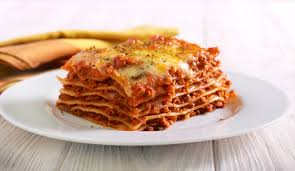

Lasagna

This is a simple lasagna recipe.
Ingredients
- 9 lasagna noodles
- 1 tablespoon olive oil
- 1 pound ground beef
- 1 pound bulk Italian sausage
- 4 (15 ounce) cans tomato sauce
- 1 (16 ounce) can sliced mushrooms, drained
- 1 teaspoon garlic salt
- 1 teaspoon dried oregano
- ½ teaspoon dried thyme
- ¼ teaspoon dried basil
- salt and ground black pepper to taste
- 1 (15 ounce) container ricotta cheese
- 3 large eggs, beaten
- ⅓ cup grated Parmesan cheese
- 1 pound shredded mozzarella cheese
Directions
- Preheat oven to 375 degrees F (190 degrees C).
- Bring a large pot of lightly salted water to a boil. Add lasagna noodles and cook for 8 to 10 minutes or until al dente; drain.
- Heat olive oil in a large skillet over medium heat. Cook and stir ground beef and sausage until browned. Drain excess fat. Stir in tomato sauce, mushrooms, garlic salt, oregano, thyme, basil, salt, and pepper. Simmer for about 30 minutes.
- In a mixing bowl, combine ricotta cheese with beaten eggs and Parmesan cheese.
- To assemble, spread 1 cup of meat sauce in the bottom of a 9x13 inch baking dish. Arrange 3 noodles lengthwise over meat sauce. Spread with one half of the ricotta cheese mixture. Top with a third of mozzarella cheese. Repeat layers, and top with remaining mozzarella cheese.
- Cover with foil: to prevent sticking, either spray foil with cooking spray, or make sure the foil does not touch the cheese.
- Bake in preheated oven for 25 minutes. Remove foil, and bake an additional 25 minutes. Cool for 15 minutes before serving.
Enjoy your lasagna!
Back to recipes